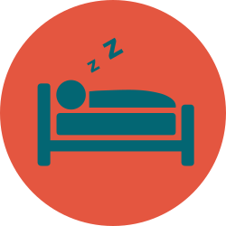

You take a nap:
You wake up the sound of your alarm ringing obnoxiously and drag yourself out of bed.
It's too early for this, you think, but at least there are only a few days until the weekend.
This weekend, your friends invited you to a summer barbeque and the weather promises to be great.
The hours go by and you're making good progress but you realize that in 5 more hours you'll have to get ready to go to work again. You...

Go to bed now and get whatever sleep you can
Continue working because you're on a roll
** Fun Fact: In a study done by Lahl et al., 2008, daytime naps were shown to increase declarative memory by about 40%.
Even naps as short as 5 minutes demonstrated memory increase, as compared to staying awake.